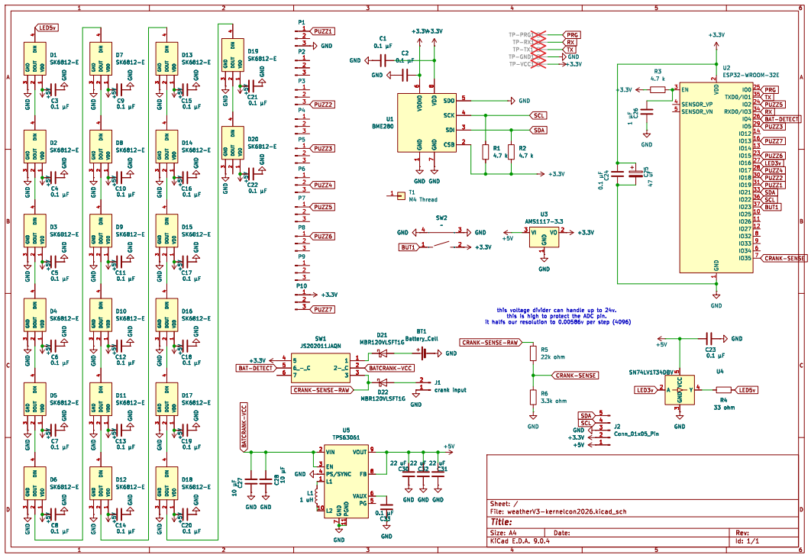

About The Badge
The primary function of this year's badge is an off-grid weather prediction device. By tracking temperature, humidity, and barometric pressure over time, you can spot patterns that help forecast what's coming. A sudden drop in pressure often signals an approaching storm, while rising pressure typically means fair weather ahead. High humidity combined with falling pressure? Rain is likely on the way. For more information and live demonstrations, visit the badge village area!
Use the mode button on the right side of the badge to cycle through the different modes. Notice the thumb screw dials? These allow you to "save" a previous reading for each weather metric—turn the dial to mark where the needle was, then compare it to spot trends.
Badge Modes
- TEMP – Displays the current temperature reading.
- HUM – Displays the current humidity reading.
- PRESS – Displays the current barometric pressure reading.
- SCAN – Proximity scanner to help locate quest kiosks. Uses a lot of battery—use sparingly!
- CHRG – Charge mode. Crank until the meter is full to power kiosk interactions.
- LED – Fun idle animations. Rotate the crank to cycle through patterns. Complete quest levels to unlock more!
The badge is also your gateway to an interactive, narrative-driven quest! See the Quest activity for details.
Power Modes
The badge has two power modes: Battery and Crank.
In Battery mode, the badge runs off the AAA battery pack and you have full access to all features—weather readings, quest modes, LED animations, and more.
In Crank mode, the badge is powered entirely by cranking the motor. In this mode, the badge will automatically cycle through the weather readings as you crank, giving you a hands-free and battery-free way to monitor the current conditions.
Note: The ESP32 is a sensitive electrical component, and powering it by crank is no easy feat—it takes some skill! Practice makes perfect. Here are some tips:
- Crank with a smooth, consistent speed.
- The ESP32 takes a moment to boot, so even when you have it right, there's a slight delay before the lights come on.
- If 3–4 seconds have passed and it still hasn't booted, the boot has likely failed—stop and restart.
- Unfortunately, during boot is when the ESP32 is most sensitive to power fluctuations.
Warning: Do not use a drill to run the crank—it could damage the electronics. Don't ask how we know.
Technical Bits
At the heart of this year's badge is an ESP32 microcontroller, paired with a Bosch BME280 sensor capable of reading temperature, humidity, and barometric pressure. The badge can be powered two ways: crank the fully metal, 90:1 gear ratio, 6VDC motor for that off-grid feel, or use the onboard AAA battery pack for convenience. To handle the variable voltage from hand-cranking, the badge uses a buck-boost converter combined with a linear regulator, ensuring stable operation across a wide input range. Rounding out the design are 20 addressable RGB LEDs that bring your weather data to life with colorful visual feedback.
Manufacturing
The badge was designed and prototyped by zonksec (Tyler Rosonke), with collaboration from popcorndan and elaboratreues. Production assembly was done by JLCPCB.
Schematic
Yes. It's a bit hard to read on this page. Open it in a new tab or get a PDF.
